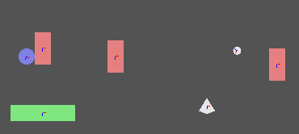

physics_world_draw_debug(flag)
| Argument | Description |
|---|---|
| flag | The flag value for showing different debug features |
Returns : N/A
This function will draw a representation of the physics wold system of the room to help with debugging when you are having trouble getting the physics scene to work right. Sometimes the problem can be in the rendering part of your game, for example a sprite may be drawn at the wrong position or rotation, giving the appearance of incorrect physics, or it may be that your calculations are not correct. Either way, this function will help you to find and resolve the problem by drawing what is going on in your physics system. To do this, you need tell it which part of the system to draw, and this is done by passing a value created from the bits stored in various "flag" constants :
| Argument | Description |
|---|---|
| phy_debug_render_aabb | This shows the absolute bounding box of each fixture in relation to the room axis |
| phy_debug_render_collision_pairs | This will show any fixtures that are currently in collision |
| phy_debug_render_coms | This marks the center of mass of each fixture in the room |
| phy_debug_render_core_shapes | Shows the basic shapes that make up the fixtures in the room |
| phy_debug_render_joints | This will draw each of the joints of all fixtures in the room |
| phy_debug_render_obb | This shows the relative bounding box for the fixtures in the room |
| phy_debug_render_shapes | This shows the actual shapes that make up fixtures within the room |
So, to draw any two of those options we would need to do a bitwise "or" (in GameMaker:Studio this is represented by | ) on the two of them and store the resulting variable for the function to use. Here is an example of how you would set a variable to use with the function that will draw only the centers of mass and the joints of all fixtures in a room :
flag = phy_debug_render_coms | phy_debug_render_shapes
Which would give you something like this :

As you can see with the above code, only the shapes and centers of mass are drawn on the screen (as well as colors representing their states - for further information please check the Box 2D documentation
on-line). In the same way you can display more, or even all, of the constants that you wish to debug... Just "or" them all together! One further thing should be noted - this function should be called only
in the draw event of an instance that has a depth lower than those you wish to debug or else you will not be able to see the debug information.
flag = phy_debug_render_aabb | phy_debug_render_collision_pairs | phy_debug_render_obb;
physics_world_draw_debug(flag);
The code above will draw all of the absolute bounding boxes, the relative bounding boxes as well as the fixtures in collision within the current physics system.